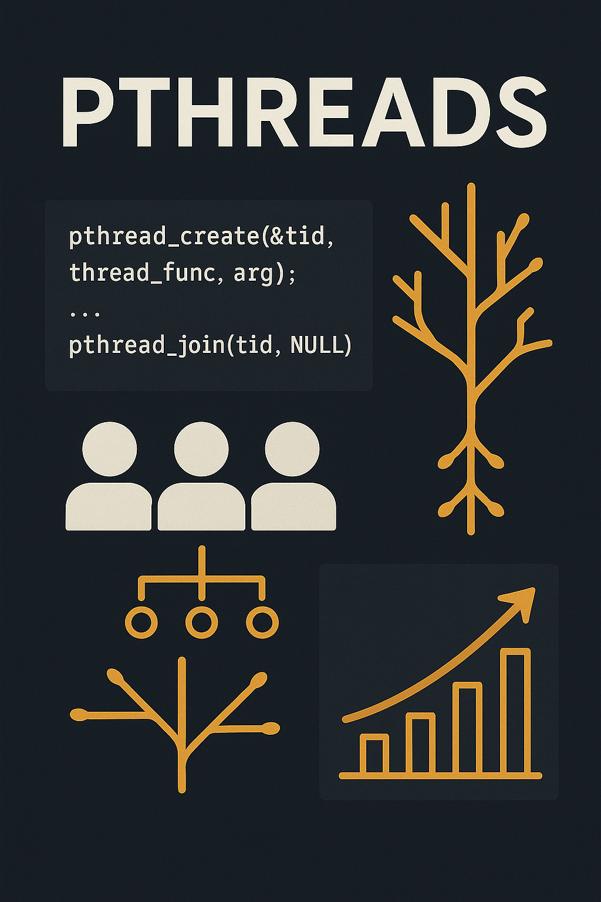

2 Introdução à Computação Paralela e Programação Multithreading usando Pthreads.
– William W. T. Rodrigues
williamwallace@alunos.utfpr.edu.br
Resumo: Este minicurso visa introduzir os conceitos fundamentais da computação paralela e da programação com threads utilizando a biblioteca Pthreads, padrão POSIX. Serão apresentados os princípios de execução concorrente, criação e gerenciamento de threads, sincronização com mutexes, e boas práticas para evitar condições de corrida e deadlocks.
2.1 Introdução
Threads, também conhecidas como processos leves, são fluxos de execução independentes dentro de um mesmo processo, compartilhando recursos como memória, arquivos abertos e espaço de endereçamento, mas mantendo estruturas próprias como pilha, registradores e contador de programa. Diferentemente dos processos tradicionais, que são criados com um conjunto completo de recursos pelo sistema operacional, as threads são mais leves e eficientes, permitindo maior paralelismo e desempenho.
Em sistemas com múltiplos núcleos de processamento, as threads podem ser executadas simultaneamente, aumentando a performance e a capacidade de resposta de aplicações, especialmente aquelas interativas. Conceitos fundamentais em programação multithread incluem escalonamento, sincronização, granularidade, regiões críticas e mecanismos de controle como locks, semáforos, mutexes, além da atenção com problemas como condições de corrida (race conditions) e impasses (deadlocks).
Sistemas operacionais modernos oferecem diferentes formas de suporte a threads. O Solaris adota um modelo híbrido com lightweight processes (LWPs), que atuam como intermediários entre threads de usuário e o kernel. O Windows 2000 utiliza um modelo com mapeamento direto entre threads de usuário e do kernel. Já o Linux trata threads como tarefas (tasks), criando-as por meio da chamada de sistema clone, que permite diferentes níveis de compartilhamento entre threads.
A programação com múltiplas threads oferece benefícios como economia de recursos, melhor aproveitamento dos processadores disponíveis e maior interatividade nas aplicações, sendo uma abordagem essencial para o desenvolvimento de sistemas concorrentes e responsivos.
2.2 Padrão POSIX
As POSIX Threads, ou simplesmente Pthreads, referem-se a uma API padronizada pelo IEEE no padrão POSIX 1003.1c, estabelecido em 1995. Esse padrão surgiu como uma resposta à fragmentação das implementações de threads disponíveis na época, quando diferentes fornecedores de sistemas Unix adotavam soluções incompatíveis. Tal diversidade dificultava a portabilidade de aplicações multithread.
Com o objetivo de unificar essas abordagens, o padrão POSIX definiu uma interface uniforme e portável para a criação, gerenciamento e sincronização de threads. Essa padronização abrange não apenas a sintaxe das funções, mas também o comportamento esperado, assegurando compatibilidade entre sistemas que implementam a API. A denominação “Pthreads” é comumente usada para referir-se às bibliotecas que seguem essa especificação, presentes em sistemas como Linux, BSD e Solaris.
O modelo proposto promove a programação concorrente com threads leves que compartilham o mesmo espaço de endereço, proporcionando desempenho superior em diversas aplicações.
2.2.1 Primitivas principais da API Pthreads
2.2.1.1 1. Criação e finalização de threads
pthread_create: cria uma nova thread, especificando a função que será executada.pthread_exit: encerra a thread atual e libera seus recursos.pthread_join: faz com que uma thread espere pela finalização de outra, permitindo sincronização e coleta de status.
2.2.1.2 2. Exclusão mútua (Mutexes)
Mutexes são utilizados para proteger seções críticas do código, garantindo que apenas uma thread por vez possa acessar determinados recursos compartilhados.
Principais funções: - pthread_mutex_init: inicializa um mutex. - pthread_mutex_lock: bloqueia o mutex, aguardando se ele já estiver em uso. - pthread_mutex_unlock: libera o mutex para que outras threads possam utilizá-lo. - pthread_mutex_destroy: destrói o mutex, liberando os recursos associados.
2.2.1.3 3. Variáveis de condição
Variáveis de condição (pthread_cond_t) permitem que threads aguardem por eventos ou estados específicos, sendo amplamente utilizadas em padrões como produtor-consumidor.
Funções principais: - pthread_cond_init: inicializa a variável de condição. - pthread_cond_wait: faz a thread esperar por um sinal, liberando temporariamente o mutex. - pthread_cond_signal: acorda uma thread em espera. - pthread_cond_broadcast: acorda todas as threads que estiverem aguardando. - pthread_cond_destroy: destrói a variável de condição.
2.2.1.4 4. Gerenciamento de atributos de threads
A biblioteca permite configurar atributos como: - Tipo de thread (joinable ou detached), - Prioridade, - Políticas de escalonamento.
Para isso, utilizam-se funções como: - pthread_attr_init - pthread_attr_setdetachstate
2.2.1.5 5. Cancelamento e tratamento de sinais
O padrão POSIX também prevê mecanismos para: - Cancelar threads (pthread_cancel), - Tratar sinais do sistema, contribuindo para a criação de aplicações robustas e responsivas.
2.3 Suporte do Hardware e Sistema Operacional
A API POSIX Threads (Pthreads) é amplamente suportada por sistemas operacionais compatíveis com o padrão POSIX, especialmente aqueles baseados em Unix, como Linux, macOS e BSD. Esses sistemas fornecem implementações robustas e eficientes da API, sendo frequentemente utilizadas em aplicações que demandam concorrência de alto desempenho.
Embora existam implementações de Pthreads para sistemas Windows, como a biblioteca Pthreads-w32, seu uso nesse ambiente é limitado. Isso se deve ao fato de que o Windows adota seu próprio modelo nativo de threads por meio da API Win32, o que torna o uso de Pthreads nesse contexto menos comum e, em alguns casos, redundante.
No nível de hardware, a utilização de threads POSIX é beneficiada por arquiteturas modernas de processadores que oferecem múltiplos núcleos e tecnologias como Hyper-Threading. Esse suporte permite que múltiplas threads sejam executadas em paralelo, seja em núcleos físicos distintos ou em unidades lógicas de execução.
No entanto, a responsabilidade pelo agendamento e pela distribuição das threads entre os núcleos disponíveis recai sobre o sistema operacional. Cabe a ele definir quando e onde cada thread será executada, considerando aspectos como prioridade, política de escalonamento e disponibilidade de recursos.
É importante destacar que as threads criadas por meio de Pthreads compartilham o mesmo espaço de memória do processo pai. Essa característica reduz a sobrecarga de criação e comunicação, quando comparada a processos independentes, mas impõe desafios adicionais em relação à sincronização. O acesso simultâneo a recursos compartilhados pode levar a condições de corrida e outros problemas de concorrência, exigindo o uso criterioso de mecanismos como mutexes e variáveis de condição.
2.4 Bibliotecas e Implementações
2.5 Exemplos Práticos com Pthreads
Nesta seção, apresentamos exemplos simples e didáticos para ilustrar o uso da biblioteca Pthreads em C.
2.5.1 Exemplo 1 – Hello World com threads
#include <pthread.h>
#include <stdlib.h>
#include <stdio.h>
void *thread(void *vargp);
int main()
{
pthread_t tid;
printf("Thread[%lu]: Hello World da thread principal!\n", (long int) pthread_self());
pthread_create(&tid, NULL, thread, NULL);
pthread_join(tid, NULL);
pthread_exit(NULL);
}
void *thread(void *vargp)
{
printf("Thread[%lu]: Hello World da thread criada pela thread principal!\n", (long int) pthread_self());
pthread_exit(NULL);
}Preparamos um Makefile para facilitar a compilação dos exemplos.
all: compile
compile: hello-world.c
gcc -lpthread hello-world.c -o hello-world.exe
clean:
rm *.exeO exemplo pode ser compilado utilizando o Makefile disponibilizado:
$ make
gcc hello-world.c -o hello-world.exe
$ ./hello-world.exe
Thread[139899883358016]: Hello World da thread principal!
Thread[139899883353792]: Hello World da thread criada pela thread principal!
$2.5.2 Exemplo 2 – Passagem de parâmetros
#include <pthread.h>
#include <stdlib.h>
#include <stdio.h>
typedef struct {
int i;
int j;
} thread_arg;
void *thread(void *vargp);
int main()
{
pthread_t tid;
thread_arg a = {1, 2};
pthread_create(&tid, NULL, thread, (void *)&a);
pthread_join(tid, NULL);
pthread_exit(NULL);
}
void *thread(void *vargp)
{
thread_arg *a = (thread_arg *)vargp;
printf("Parâmetros recebidos: %d %d\n", a->i, a->j);
pthread_exit(NULL);
}2.5.3 Exemplo 3 – Execução paralela de múltiplas threads
#include <pthread.h>
#include <stdlib.h>
#include <stdio.h>
typedef struct {
int id;
} thread_arg;
void *thread(void *vargp);
int main()
{
pthread_t tid[2];
thread_arg a[2];
for(int i = 0; i < 2; i++) {
a[i].id = i;
pthread_create(&tid[i], NULL, thread, &a[i]);
}
for(int i = 0; i < 2; i++) {
pthread_join(tid[i], NULL);
}
pthread_exit(NULL);
}
void *thread(void *vargp)
{
thread_arg *a = (thread_arg *)vargp;
printf("Começou a thread %d\n", a->id);
for(volatile int i = 0; i < 1000000; i++);
printf("Terminou a thread %d\n", a->id);
pthread_exit(NULL);
}2.5.4 Exemplo 4 – Uso de mutex (trava)
#include <pthread.h>
#include <stdlib.h>
#include <stdio.h>
typedef struct {
int id;
} thread_arg;
pthread_mutex_t mutex;
int var = 0;
void *thread(void *vargp);
int main()
{
pthread_t tid[2];
thread_arg a[2];
pthread_mutex_init(&mutex, NULL);
for(int i = 0; i < 2; i++) {
a[i].id = i;
pthread_create(&tid[i], NULL, thread, &a[i]);
}
for(int i = 0; i < 2; i++) {
pthread_join(tid[i], NULL);
}
pthread_mutex_destroy(&mutex);
pthread_exit(NULL);
}
void *thread(void *vargp)
{
thread_arg *a = (thread_arg *)vargp;
pthread_mutex_lock(&mutex);
printf("Thread %d: var antes = %d\n", a->id+1, var);
var += a->id + 1;
printf("Thread %d: var depois = %d\n", a->id+1, var);
pthread_mutex_unlock(&mutex);
pthread_exit(NULL);
}2.5.5 Exemplo 5 – Variáveis condicionais
#include <pthread.h>
#include <stdlib.h>
#include <stdio.h>
#include <unistd.h>
typedef struct {
int id;
} thread_arg;
pthread_mutex_t mutex;
pthread_cond_t cond;
int ready = 0;
void *thread(void *vargp);
int main()
{
pthread_t tid[2];
thread_arg a[2];
pthread_mutex_init(&mutex, NULL);
pthread_cond_init(&cond, NULL);
for(int i = 0; i < 2; i++) {
a[i].id = i;
pthread_create(&tid[i], NULL, thread, &a[i]);
}
for(int i = 0; i < 2; i++) {
pthread_join(tid[i], NULL);
}
pthread_mutex_destroy(&mutex);
pthread_cond_destroy(&cond);
pthread_exit(NULL);
}
void *thread(void *vargp)
{
thread_arg *a = (thread_arg *)vargp;
if(a->id == 0) {
pthread_mutex_lock(&mutex);
while(!ready) {
printf("Thread %d: esperando sinal...\n", a->id);
pthread_cond_wait(&cond, &mutex);
}
printf("Thread %d: recebeu sinal\n", a->id);
pthread_mutex_unlock(&mutex);
} else {
sleep(1);
pthread_mutex_lock(&mutex);
ready = 1;
pthread_cond_signal(&cond);
printf("Thread %d: enviou sinal\n", a->id);
pthread_mutex_unlock(&mutex);
}
pthread_exit(NULL);
}2.6 Modelo de Programação e Execução
O modelo de programação com Pthreads é baseado na criação e controle explícito de threads a partir de um processo principal. Cada thread pode ser vista como uma função separada que será executada de forma concorrente com as demais. O ponto de entrada de uma thread é sempre uma função com a assinatura void* função(void* argumento), permitindo grande flexibilidade para passagem de parâmetros via ponteiros genéricos. Funções como pthread_create, pthread_join e pthread_exit formam a base para o controle de ciclo de vida de uma thread. Além disso, mecanismos de sincronização como pthread_mutex_lock e pthread_cond_wait permitem o controle de acesso a recursos compartilhados, prevenindo condições de corrida (race conditions).
A sincronização se dá principalmente por meio de mutexes (para exclusão mútua) e variáveis de condição (para coordenação de estados). Essas estruturas permitem a construção de zonas críticas protegidas e a implementação de padrões clássicos de concorrência, como produtores e consumidores. Por exemplo, com pthread_mutex_lock e pthread_mutex_unlock, você garante que apenas uma thread possa acessar determinada seção crítica por vez. Já com pthread_cond_wait e pthread_cond_signal, você pode fazer com que uma thread aguarde até que uma certa condição seja atendida. O uso dessas primitivas exige disciplina, pois erros como deadlocks e starvation podem ocorrer se não forem bem planejadas.
Na prática, a modelagem com Pthreads requer um planejamento cuidadoso: é preciso definir claramente as tarefas que podem ser executadas em paralelo, decidir como compartilhar dados entre threads, e garantir que essas interações sejam seguras. Uma vantagem do modelo Pthreads é sua leveza: as threads compartilham o mesmo espaço de memória, permitindo comunicação mais eficiente do que processos independentes. No entanto, isso também exige maior atenção na programação, pois erros em uma thread podem afetar todo o processo.

int main(){
}Nota
2.7 Considerações Finais
Atualmente, praticamente todo tipo de aplicação tende a ser paralelizada, já que o uso de processadores multicore está cada vez mais disseminado. Em pouco tempo, todos os processadores terão múltiplos núcleos. O padrão Pthreads é uma das opções que permite o uso maximizado desses processadores, não havendo um tipo específico de aplicação para Pthreads.
Embora seu uso seja mais óbvio em algumas aplicações, como servidores web que recebem múltiplas requisições simultâneas, quase toda aplicação pode ser paralelizada com o uso de Pthreads.
2.7.1 Prós e Contras
2.7.1.1 Vantagens de se programar utilizando threads:
- Utiliza melhor o potencial dos processadores multicore, que são cada vez mais comuns.
- O custo da troca de contexto entre threads é menor do que entre processos, devido à leveza das threads.
- Aplicações com paralelismo inerente, como grandes servidores web, se beneficiam do uso simples de threads para atender múltiplas requisições simultâneas.
2.7.1.2 Desvantagens de se programar utilizando threads:
- O modelo de programação com threads é mais complexo do que o modelo sequencial tradicional.
- Converter programas sequenciais em programas com threads não é trivial, muitas vezes exigindo reescrita significativa do código.
2.8 Referências – Pthreads
POSIX Threads Programming. The Open Group Base Specifications. Disponível em: https://pubs.opengroup.org/onlinepubs/009695399/functions/pthread_create.html
Threads em C – Como Programar Usando Pthreads. Programação Progressiva, 2019. Disponível em: https://www.programacaoprogressiva.net/2019/02/Threads-em-C-Como-Programar-Usando-Pthreads.html
Aula 03 – Pthreads, ICMC-USP. Disponível em: http://wiki.icmc.usp.br/images/3/30/Aula-03-_Pthreads.pdf